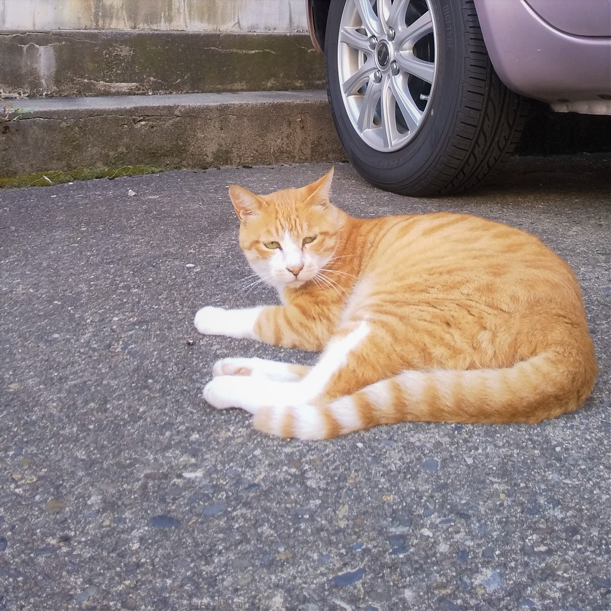

まめちゃん
MMP(まめまめプロジェクト)の代表。みんなを引っ張ていく頼れるリーダー。我が儘なのがたまに傷。国際問題に興味のある意識高い系ねこ。尊敬する人間は、グレタ・トゥンベリ。ねこ大学国際政治経済学部在学中。

ピース
心優しいおじいさん犬。まめちゃんを盲目的にリスペクトしており、まめちゃんのように国際問題を学ぶためにミヤネ屋で日々勉強中。最近の口癖は、「ママさんミヤネ屋つけて下さいですぅ！」

みるくん
ねこ大学でまめちゃんの後輩。まめちゃんと知り合ったために、ご飯をねだりに来るようになる。本名の「みるく」は、まめちゃんが自分がなりたかった名前を譲ってくれて名付けられた。
Welcome
MMPへようこそ！
世界中の全ての生き物は平和に生きる権利がある。この理念のもと設立された代表まめちゃんによる、動物保護へ取り組む団体です。